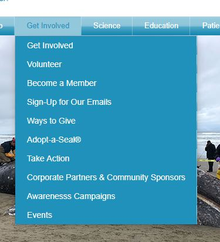
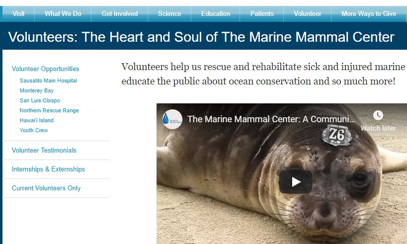
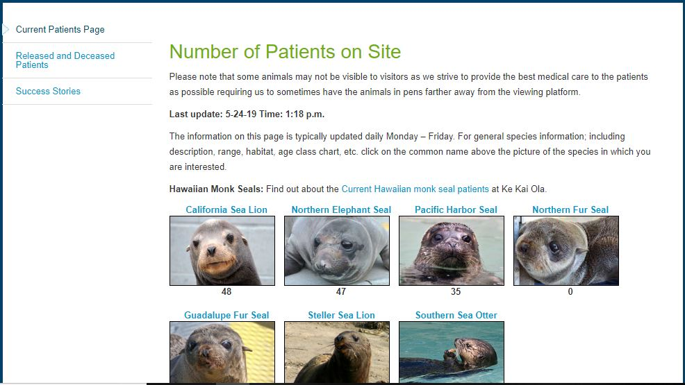
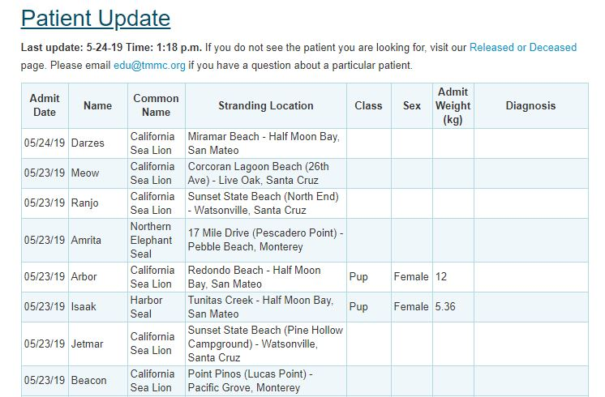

What's happening here?
This entry is about creating and conducting a user test on a non-mobile platform. This inovlves researching the site, asking for help, conducting the test, and documenting the results. It's quite an interactive process and was a lot more challenging than anticipated. For starters, I acutally had to interact with a live human being. Of course my initial and continued thought is, "But I am not going to be interacting with the end user in my future career!" Yet after reviewing the assignment and seeing what came of it I realized the importance of understanding the impetus and importance of doing these things.
Pick a site and draft a user study
Continuing on my observations of what I saw with The Marine Mammal Center's website, I am going to have my user look at this site and give me feedback. I reviewed the website and decided on a few key areas that I wanted to the person to look at: homepage interest, color layout, donation, and let's find an animal.
Find some friends
Sometimes in the city of Seattle, trying to coordinate with people is nigh impossible. And if the weather is even remotely sunny, forget making any plans or at least be prepared to have them cancel on you. I was lucky that I had a friend whose plans changed last minute and coordinated well with my schedule. So off to meet her I went.
The individual is a 32 year old female who works for a nonprofit healthcare facility and is also enrolled at University of Washington in their data analytics certificate program. We met at a Starbucks on a late Sunday morning.
Feedback
I had my user look at the webpage and there was an immediate "aw" factor. She, like me, loves marine mammals and immediately loved the picture of the pinnipeds. But once she started to look around, the cuteness of the animals were not enough for her to comment on the page.
As I have noticed before, she said that the nav bar was too busy and there seemed almost too much going on. She did appreciate that the images that scrolled by were slow since there already seemed to be so much going on. Continuing to the bottom of the page, she commented that the security badges and a few other icons present seemed unnecessarry. She also mentioned that she liked to see the contact information at the bottom as that where she automatically goes to find that information. One thing that stood out that was rather annoying is the social media side bar. It's static as you scroll up & down and almost detracts from the page.
Another item she picked up on that was intersting to note, is the minimization of the emotional factor with reporting a distressed seal. There wasn't a picture but just a simple phone number at the top of the page. I didn't pick up on this in my initial review but it was interesting to think about. The text is plain but noticeable and prominent. No sad pictures to go along with the phone number.
When I asked her about the color situation, she liked the blue but the contrast on the nav bar was not optimal and almost non existent. The font is simple and easy to read.
We explored the Volunteer section and she made some good points. Instead of making the opportunities the first point, what about telling people what volunteering is all about THEN have someone decide if they'd rather give time or money to support the cause.
 What We DoThe video provided has subtitles and my user said this was a plus for her since she typically finds herself watching these things on mass transit and if she's forgotten her headphones, she can still understand what's going on. But we did agree that the video was probably a little too long and we lost interest halfway throug.
Elephant seal pup!I then asked my user to see if she could find out what animals TMMC takes care of and how many are on site. She admitted that she could figure out that she could click on the Patients tab and it would take her there.
Patients One thing that she was almost disappointed about was that there weren't individual pictures of the animals on site. I can't say that I blame her but what frustrated her more was the long table of information that provided patient information. Oof ... just a little too muchWhen we clicked on the animals, it provided more information on the animal but not on the patients. There was a hope for more aw and cute as when she opened the site. As she looked around, she noticed that there were links to audio files for the sea lions and elephant seals but none for the Northern Fur Seal. We both were disappointed witih that lack of feature since it was on the others.
One big thing this organization relies is donations. So we explored it. She immediately saw that you could donate your vehicle and was kind of surprised that this was an option. The Donate Now section brought up something that we realized would probably need a little more explaining. Something about a 3% offset. We agreed that this needed more explanation and it would be nice to have a breakdown of what that 3% does or how it gets applied. She felt that the images were slightly outdated and that she wanted something a little more interactive.
Conclusion
All in all, my user didn't mind using the site and had some great feedback about the site. She liked that there was a lot of information but also felt that it could possibly be a little more user friendly.